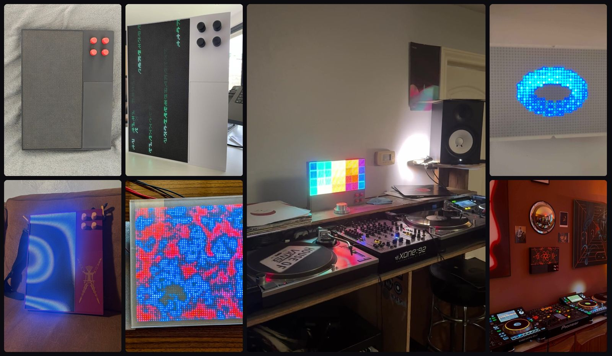

Patternflow는 오픈소스 LED 신디사이저입니다.
손끝으로 빛을 연주합니다.
An open-source LED synthesizer. Play light patterns with your fingertips.
이승훈의 데뷔작
Patternflow는 미디어 아티스트 이승훈의 데뷔작입니다. 2026년 1월 백남준아트센터에서 《Participation TV》 앞에 섰고, 두 달 뒤 처음으로 LED 매트릭스에 노브를 달았습니다.
백남준의 《Participation TV》(1963)에 대한 동시대적 재해석입니다. 백남준은 관객이 이미지를 바꾸게 했고, Patternflow는 당신이 그것을 만들고 건네주게 합니다.
SeungHun Lee's debut work as a media artist, and a contemporary reinterpretation of Nam June Paik's Participation TV (1963).
누구나 패턴을 만듭니다
코드를 몰라도 됩니다. 원하는 빛을 말로 적어 AI에 건네면 패턴 코드가 돌아오고, 붙여 넣으면 바로 움직입니다. Pattern Lab에서 색과 노브를 다듬어 보내면 10초쯤 뒤 Wi-Fi로 기기에 올라갑니다.
만든 패턴은 커뮤니티에 올립니다. 다른 사람이 가져가 고쳐 쓰고, 원작자 이름을 달고 다시 올립니다. 지금 백 개가 넘습니다. 패턴은 작은 파일 하나라서 어디서 만들었든 그대로 돕니다.
모든 Patternflow는 우리가 만든 모든 패턴을 연주합니다.
Describe a light to an AI, paste back the code, and it plays on every Patternflow in the world.
돌려 보세요
기기에 들어가는 패턴의 원본 코드가 이 화면에서 그대로 돕니다. 노브를 위아래로 끌어 돌립니다. 휠과 방향키도 됩니다.
Turn the knobs. This is the pattern's own source, running in your browser.
소리와 함께
Audio 에디션에서는 소리가 노브를 돌립니다. 노브마다 저음이나 고음을 맡기면 어떤 패턴이든 음악을 따라 움직이고, 패턴 쪽에는 소리 코드가 한 줄도 없습니다.
기기에 5달러짜리 마이크를 달면 컴퓨터 없이 방의 소리를 듣습니다. DAW에서는 Wi-Fi로 MIDI 포트가 됩니다. 위에서 마이크를 켜면 이 화면의 노브가 지금 들리는 소리로 돌아갑니다.
In the Audio edition, sound turns the knobs, so every pattern moves with the music.
세계에서
- 2026.04인스타그램과 Arduino 서브레딧에서 조회 15만 회, 추천 3,700개. 제품보다 파일을 달라는 말이 많아 전부 공개했습니다.
- 2026.07Creative Applications Network 소개
- 2026.08Mixmag Asia, Synthtopia, AMAZONA.de, MATRIXSYNTH 기사
- 2026.09Patternflow 한 대가 처음으로 작품으로 팔렸습니다.
- 2026.10Crowd Supply 크라우드펀딩 목표의 200%, 세계로 배송
- 2026.10샌프란시스코 팝업 갤러리 《USER EXPERIENCE》 전시. 서울역 근처 Modu Art Space의 시각장애 작가 전시 《Anbu》에서는 작가들의 작품을 Patternflow로 옮겨 손으로 연주했습니다.

Built by hand from the published files in the UK, Poland, France, Norway, the UAE and the USA.
공간에서
관람객이 휴대폰으로 AI에게 원하는 빛을 말하고 보내면, 10초쯤 뒤 그 패턴이 벽의 Patternflow에 뜹니다. 옆 사람이 노브를 돌려 그 패턴을 연주합니다.
A visitor describes a light to an AI, and seconds later it is on the wall for the next person to play.